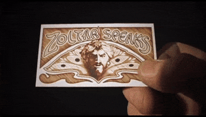

The Double Collapse
The infrastructure of being unobserved has quietly ceased to exist. Not gradually. Now. Two papers, published weeks apart, confirm what most institutions have not yet accepted: anonymity is gone — and it took collective power with it.


"The most common form of despair is not believing oneself to be unobserved."
— According to Søren Kierkegaard

When Anonymity and Employment Fall Together
What we called anonymity was always just the high cost of being found…
Somewhere in a machine learning lab right now, a researcher is writing a peer review. They chose their words carefully. They are anonymous. That is the entire point of double-blind review, the institution science has used for decades to protect honest evaluation from retaliation, favoritism, and the corrupting influence of reputation. The reviewer does not know whose work they are judging. The author does not know who is judging them. This mutual ignorance is considered so essential to scientific integrity that its protection is written into the policies of every major conference and journal.
That anonymity is now functionally gone. Not breached in theory. Gone in practice, at commodity cost, using tools available to any moderately resourced actor with an API key.
A paper published in January 2026 by Zhang and Zhang at Beihang University and Peking University introduced DAS — De-Anonymization at Scale — a pipeline that uses large language models to match anonymous peer reviews to their authors by writing style alone. Tested against 147,367 anonymized ICLR reviews, it achieved 44% recall at rank 20 against a random baseline of 0.13%. That is a 338-fold improvement over chance. A competitor who wants to know whether a rival reviewed their paper unfavorably does not need certainty. They need enough signal to act on. DAS gives them that signal for approximately one dollar per query.
A separate paper, published the same month by researchers at ETH Zurich and Anthropic, demonstrated that LLM-powered pipelines can re-identify pseudonymous users on Hacker News and Reddit, matching behavioral profiles to real identities with 67% recall at 90% precision, replicating in minutes what would previously require hours of skilled investigative labor. The cost: one to four dollars per identity.
Two papers, published within weeks of each other, demonstrating the same underlying fact from two different angles: the technical infrastructure of anonymity, the stylometric, behavioral, and increasingly genomic, has collapsed. Not gradually. Now.
The privacy community has noticed. What it has not done, what nobody has done, is connect this collapse to the simultaneous collapse happening in labor markets, and recognize that these are not two problems. They are one.
What Anonymity Actually Was
There is a tendency in privacy discourse to treat anonymity as a preference, something people want for comfort, or to avoid embarrassment, or to say things online they would not say in person. This framing is not wrong, but it is radically incomplete. Anonymity has historically been a precondition for collective action, not merely a personal convenience.
Consider what labor organizing actually required. Workers had to discuss grievances with each other before management knew they were organizing. They had to identify shared interests, recruit participants, and coordinate action without giving the employer time to identify and terminate the ringleaders before a critical mass formed. The entire logic of unionization depends on a window of anonymous coordination that precedes collective action. The National Labor Relations Act of 1935 codified protections for organizing precisely because, without legal protection, employers would simply fire anyone who talked to a union organizer. Anonymity, the impossibility of monitoring every conversation, was the practical backstop when legal protection failed or did not yet exist.
The same logic applies to every form of organized dissent. Whistleblowers depend on not being identified before the disclosure is complete. Journalists depend on sources whose identities cannot be traced. Political activists in hostile environments depend on the inability of authorities to reconstruct their networks from their communications. In each case, anonymity is not a privacy preference. It is the operational requirement for a particular kind of social action. The kind that challenges concentrated power.
Peer review is a smaller version of the same structure. The reviewer must be able to say honestly that a paper is flawed, or that a methodology is wrong, or that a finding contradicts prior workm without the author being able to retaliate professionally. The anonymity is not incidental to scientific integrity. It is the mechanism that produces it.
When we say anonymity has collapsed, we are not saying people can no longer keep embarrassing opinions private. We are saying the operational preconditions for a specific category of collective action, the kind directed upward, toward concentrated power, have been technically eliminated.
What Employment Actually Was
The parallel argument applies to employment. Economic commentary on automation focuses on income — people will not have money to live. That is a real problem. But it is again incomplete in the same direction. Employment was not merely a mechanism for distributing income. It was a mechanism for distributing leverage.
A worker who can credibly threaten to withhold their labor has bargaining power. That power is individual at the margins, you can quit a job, but it becomes meaningful through aggregation. Unions work because an employer who loses one worker faces a disruption; an employer who loses the entire workforce faces catastrophe. The threat of collective withdrawal is what gives individual workers leverage that individual market power alone cannot provide. The history of labor law, from the Wagner Act to collective bargaining agreements, is the history of institutionalizing and protecting that leverage.
Automation does not merely reduce income. It reduces the credibility of that threat. If an employer can replace a striking workforce with AI systems, the strike loses its coercive power. The workers' leverage evaporates not because they are poorer but because the thing they could withhold, their labor, is no longer scarce. David Autor's research on labor market polarization, published across multiple papers in the American Economic Review and Quarterly Journal of Economics beginning in 2003, documented how automation hollows out routine work while leaving high-judgment and high-interpersonal tasks relatively intact. What his framework did not fully anticipate, because the capability did not yet exist, is AI systems attacking non-routine cognitive work simultaneously with routine work. The hollowing is now total, not partial.
This matters for taxation in the way that is usually discussed — wage income disappears, payroll taxes collapse, fiscal systems designed around labor income face structural shortfalls. In the United States, individual income taxes and payroll taxes constitute roughly 86% of federal revenue. That architecture was built for an economy where most value creation ran through human wages. When that changes, the tax base changes. These are real and serious fiscal problems.
But the deeper problem is political, not fiscal. Taxation is a claim that society makes on value creation. The ability to make that claim, and enforce it, ultimately depends on the relative bargaining power between those doing the taxing and those being taxed. Historically, that power balance has been maintained partly by the political organization of working people — who, being numerous, could threaten electoral consequences and, being economically necessary, could threaten to withhold productive participation. Remove the economic necessity of their participation and you remove one of the two primary levers through which democratic redistributive politics has operated.
Why These Are the Same Problem
Here is the argument stated directly: throughout modern history, every major consolidation of economic power has required two simultaneous moves. First, the elimination of the economic basis for organized resistance, enclosure of common land, consolidation of cottage industry into factories, replacement of craft production with standardized manufacturing. Second, the enhancement of the capacity to identify, monitor, and target those who resist — parish records, factory discipline, company towns, Pinkerton agencies.
Neither move alone is sufficient to consolidate power irreversibly. Workers who lose their economic independence can still organize anonymously. Workers who can be identified and monitored can still credibly threaten to withhold labor if they retain collective economic power. The combination, economic dependence plus surveillance, is what historically produced conditions from which recovery required either external disruption or prolonged political struggle.
What is happening now fits this pattern exactly, with two differences that make it historically unprecedented in degree if not in kind.
The first difference is speed. Previous transitions played out over decades, giving labor markets, legal systems, and political institutions time, albeit insufficient time, but some time to adapt. The current transition is measured in years. The capability inflection points represented by these deanonymization papers were not possible eighteen months ago at commodity cost. They are possible now. The labor market disruption from AI is similarly measured in quarters, not decades. Institutions that evolved over generations to manage slower transitions have no adaptation pathway at this rate.
The second difference is the absence of geographic escape. Previous consolidations were bounded by geography. Factory workers displaced in one region could migrate. Peasants dispossessed by enclosure could move to cities. The informational and economic disruptions of the current moment are global and simultaneous. There is no labor market that AI is not entering. There is no jurisdiction where LLM-powered deanonymization is not technically feasible. The exits that historically provided pressure valves against the worst concentrations of power are closed.
There is a third element that compounds both: genomic data. Unlike behavioral or stylometric data, which describes what you have done and how you write, genomic data describes what you are, and what your biological relatives are, whether they consented to exposure or not. A 2018 study in Science by Yaniv Erlich and colleagues demonstrated that with roughly three million profiles in a genomic database, you can identify a substantial fraction of the entire US population of European descent through third-degree relatives or closer. The database does not need to contain you. It needs to contain your cousin. You cannot change your genome the way you can change your behavior. The exposure, once it exists in commercial databases governed by terms of service that can change at a bankruptcy auction, is permanent — not as an event but as a condition.
The Asymmetry That Makes This Irreversible
The switching costs in this situation are maximally asymmetric, and that asymmetry is underappreciated in every policy conversation I have observed.
For individuals, the cost of regaining anonymity is effectively infinite. Your writing style cannot be meaningfully changed, adversarial stylometry research has demonstrated that humans can partially obscure their stylometric fingerprint but cannot eliminate it, and the obfuscation itself creates a detectable signal. Your behavioral profile, accumulated across years of online activity, exists in databases you cannot access or delete. Your genome, if it has been sequenced by you or by a biological relative, is permanently in commercial systems. The data produced every day by your ordinary participation in digital economic and social life continues to accumulate in ways you cannot monitor or control.
For institutions deploying deanonymization tools, the switching cost is near zero. The DAS pipeline costs approximately one dollar per query. The Lermen et al. pipeline costs one to four dollars per identity. These are rounding errors in the operating budgets of any government agency, corporation, or well-funded adversary. The capability to identify anyone who has left a digital trace is now an API call.
This asymmetry is not primarily a technology problem. It is a political economy problem. Surveillance infrastructure has immediate commercial applications — advertising, fraud detection, credit scoring, competitive intelligence — that generate revenue and therefore capital for continued development. Privacy infrastructure is a public good. Public goods are systematically underproduced by markets. The gap between the two is not closing; it is widening, because the commercial incentives are structural and the investment in privacy-preserving technology is contingent on regulatory pressure that does not currently exist at adequate scale.
There is a further irony worth stating plainly. The same deanonymization capability that threatens individual privacy could, in principle, help close the tax gap. Financial opacity — offshore accounts, shell companies, transfer pricing — is an information asymmetry play. Tax authorities that could deploy LLM-powered investigative tools against financial data streams could reconstruct hidden wealth flows the way DAS reconstructs hidden authorship. The technical barrier is lower than the political barrier: the entities most exposed by aggressive AI-powered tax enforcement are precisely the entities with the most political leverage to prevent it. You cannot build a financial transparency infrastructure that only looks at tax evasion. The same pipes see political donations, union organizing, medical spending, religious affiliation. The price of an enforceable tax system in a deanonymized world is the elimination of financial privacy as a check on state power. That tradeoff is not being seriously debated anywhere. It probably should be.
What Remains
I want to be honest about the limits of what I can offer here, because this problem resists the kind of clean policy prescription that essays are supposed to end with.
Technical countermeasures for deanonymization are mostly inadequate against determined adversaries with the tools now available. Legal frameworks designed to protect anonymity — GDPR, CCPA, HIPAA — were built around concepts of data minimization and purpose limitation that assume data stays in structured databases with identifiable controllers. The LLM-powered deanonymization pipeline operates on publicly available unstructured text, crosses jurisdictions, and requires no access to protected data. It is not clearly regulated by existing frameworks, and the pace of legislative response is measured in years while the capability advance is measured in months.
Labor market interventions like universal basic income, robot taxes, expanded public provision of healthcare, housing, and education, they are economically coherent responses to the collapse of wage-based distribution, but their political feasibility depends on the very collective action capacity that the dual collapse is simultaneously eliminating. The people who need these interventions most are the people losing the leverage to demand them.
What I can say with confidence is this: treating these as separate problems, deanonymization as a privacy regulatory issue, automation as a labor economics issue, genomic data as a health data governance issue, tax base erosion as a fiscal policy issue — is not merely incomplete. It is the wrong frame. Each of these domains is producing literature and policy proposals that are locally coherent and globally insufficient because they do not model the interaction effects.
A peer reviewer whose identity can be determined by a dollar's worth of compute, working in an industry where their expertise is being automated, whose financial profile exists in data broker databases, and whose biological identity is in a commercial genomic database with bankruptcy-contingent terms of service, that person does not have four separate privacy and economic problems. They have one structural problem: the conditions that made their participation in social, scientific, and economic life approximately sovereign have been simultaneously eliminated.
The question this poses — for policymakers, for technologists, for anyone who thinks seriously about institutional design — is whether democratic institutions built to manage power asymmetries between capital and labor can evolve fast enough to manage a new asymmetry: between those who can identify anyone and those who can no longer hide. These are different problems requiring different institutional responses, but they have the same underlying logic. Power concentrates when identification becomes cheap and resistance becomes costly. Every institution we have for preventing that concentration was built for an environment where identification was expensive.
That environment no longer exists. We have not yet built institutions for the one that does.
Key sources informing this essay:
Lermen, Paleka, Swanson et al. (2026). Large-scale online deanonymization with LLMs. arXiv:2602.16800.
Zhang & Zhang (2026). De-Anonymization at Scale via Tournament-Style Attribution. arXiv:2601.12407.
Erlich et al. (2018). Identity inference of genomic data using long-range familial searches. Science, 362(6415).
Autor, D. (2003–2015). Labor market polarization research. American Economic Review; Quarterly Journal of Economics.
Narayanan & Shmatikov (2008). Robust de-anonymization of large sparse datasets. IEEE S&P.
Arrieta-Ibarra et al. (2018). Should We Treat Data as Labor? AEA Papers and Proceedings.
Brennan, Afroz & Greenstadt (2012). Adversarial stylometry. ACM TISEC.
Don't miss the weekly roundup of articles and videos from the week in the form of these Pearls of Wisdom. Click to listen in and learn about tomorrow, today.


Sign up now to read the post and get access to the full library of posts for subscribers only.
 🌶️ iamkhayyam
🌶️ iamkhayyam
About the Author
Khayyam Wakil carries the namesake of a Persian mathematician who calculated the solar year more accurately than European civilization would manage for five more centuries — and whose name never made it onto the triangle he described.
Khayyam has spent two decades building companies at the edges of what technology could do: immersive media, artificial intelligence, ternary computing. Then a problem he couldn't put down led him, at 2am in a silent Calgary winter, into the mathematics underneath everything else.
On November 22nd, 2025, he became a mathematician.
He is the founder of CacheCow Agriculture Inc. and The ARC Institute of Knowware, where the geometry hiding in numbers is being turned into things that matter — sensors, papers, and the occasional proof that curiosity is the only credential that compounds. The calendar Omar Khayyam designed in 1079 CE remains more accurate than the one the world still uses today.
Token Wisdom is where he writes while the work is still warm.
Subscribe at https://ghost-production-198e.up.railway.app
#leadership #longread | 🧠⚡ | #tokenwisdom #thelessyouknow 🌈✨